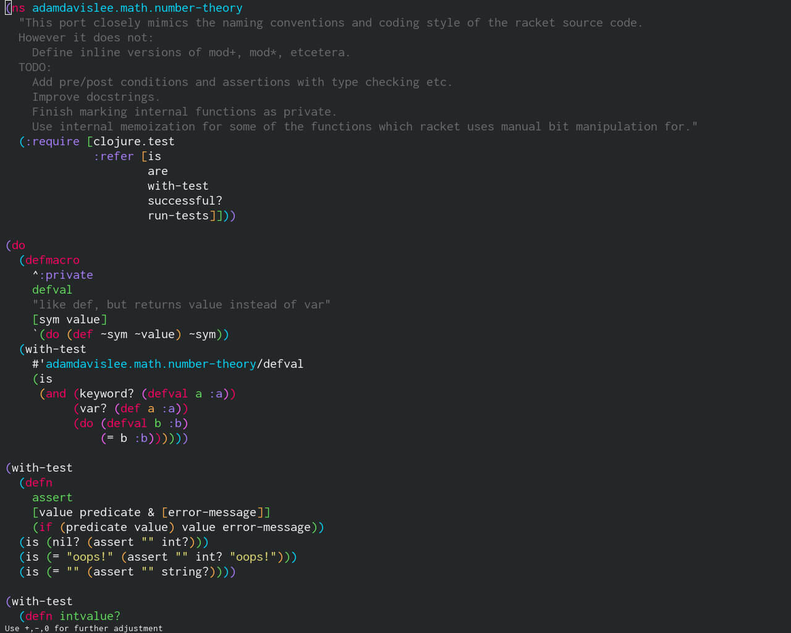
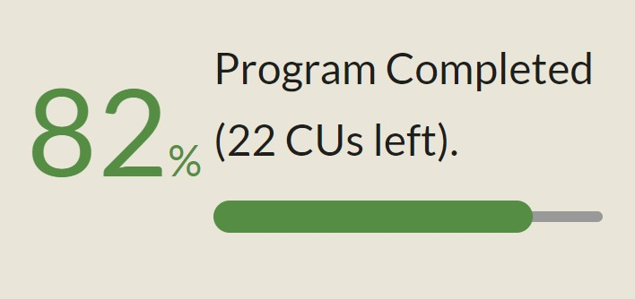
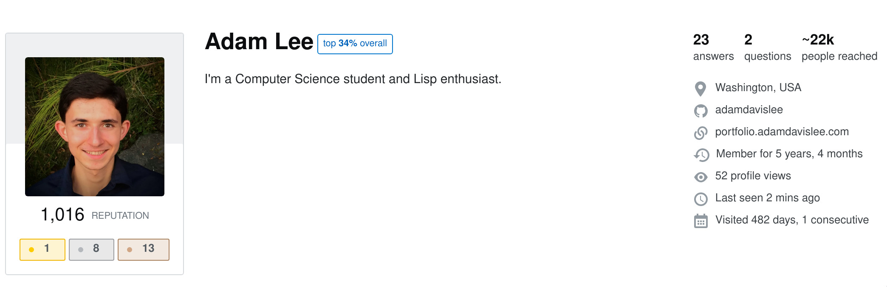
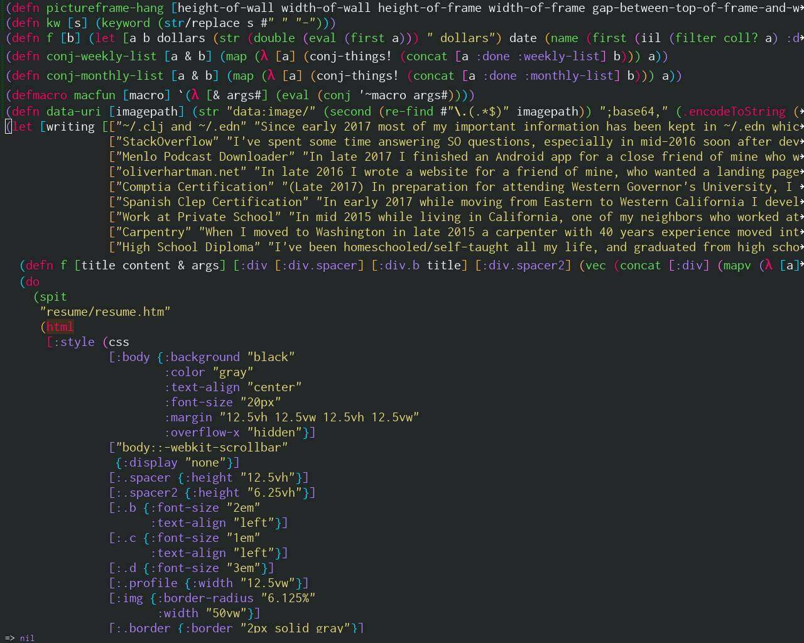

number-theory.clj
I've translated the number-theory namespace of Racket's math library to Clojure.
[June 2017]
Higher Education
I enrolled in Western Governor University's Computer Science degree in July 2018, and in my first 6-month term completed over a quarter of my degree.
E-Commerce Consulting
During the last few months of my college term, I took and comnpleted a short project for Chatmode, connecting three online services together through their APIs for a business need.
Work Experience
I've worked with an experienced carpenter, helping him build his house from start to finish over the course of more than two years.
[June 2018]

StackOverflow
I've accumulated 800 reputation on StackOverflow.
DAG Editor
I've worked on the concept of a visual lisp editor.
[March 2018 - Present]
Personal Database
Most of my important information has been kept in two dotfiles ~/.edn and ~/.clj.
I have a lot of day to day progamming interaction from interacting with these files, which I rely on for maintaining my records.
[January 2017 - Present]
oliverhartman.net
I wrote a website for a friend of mine, who wanted a landing page for those interested in his work as a musician.
[Late 2016]
Menlo Podcast Downloader
A friend of mine wanted an app that would automatically archive past podcasts from a specific RSS feed.
I worked through the nuances of the interaction between Android, Java, the JVM, Clojure, and lein-droid to create a simple app, requiring no interaction, which simply notifies the user when a new podcast has been downloaded.
[October 2017]
Comptia Certification
To qualify for as a student at Western Governor's University, I earned my Comptia A+ certification (the exam tests general hardware and software competence, and is accepted at WGU as qualification for their Software Development BA).
I've also earned the CIW Site Development Associate certification.
[December 2017]
Spanish Clep Certification
While moving from Eastern to Western California I developed a passion for natural languages and have become fluent in Spanish and French.
In order to document my proficiency in Spanish, I took and passed the CLEP exam for Spanish 2.
[January 2017]
Work at Private School
While living in California, one of my neighbors who worked at a private school (chartwell.org) arranged for me to work as his assistant at the school to repaint part of the school's interior, organize their storage, and sand/stain their benches.
Afterward I was given this letter signed by many of the school's staff.
[Mid 2015]
AWG Volunteer
While living in Alpine County, California, I volunteered as a board member of the Alpine Watershed Group.
I attended monthly board meetings, assisted gathering data from the local waterways, and did other restoration work (removing debris etc.).
[November 2012 - February 2013]